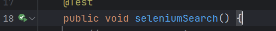
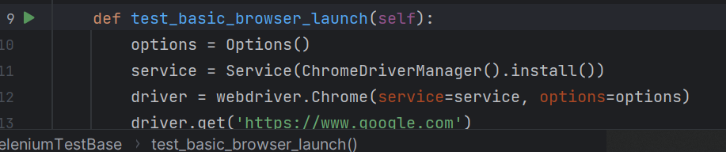
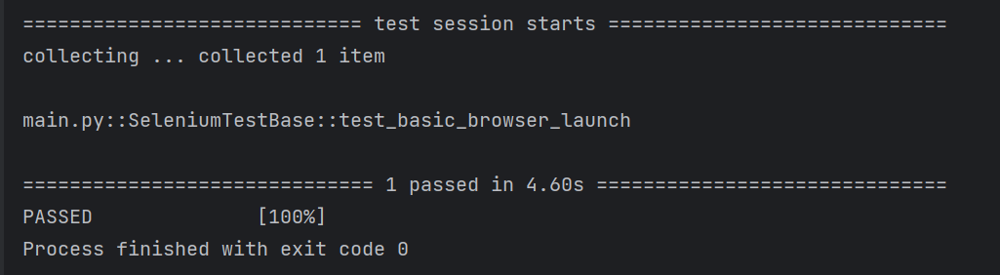

Integrating Selenium in Java/Python
Content
Selenium can be integrated in both Java and Python. We will be using IDEs PyCharm for Python and IntelliJ for Java.
Java/IntelliJ
This portion of the course will focus on setting up a project's Selenium dependencies and pom.xml file, while also providing basic explanation of commonly used and important methods in Java.
Let's start off by making a new project. Open up IntelliJ IDE. Use whatever name you want for Name. For language, choose Java and for Build System, pick Maven. For JDK version, it is recommended to use something newer than 11. If it is newer than 11, then it should not matter which version you use. Now create the project and you will see a new pom.xml file.
We will now alter the pom.xml file. Edit the pom.xml either in Notepad (by navigating through file explorer), or by using IntelliJ itself. Erase the old contents and replace it with this code:
<project xmlns="http://maven.apache.org/POM/4.0.0"
xmlns:xsi="http://www.w3.org/2001/XMLSchema-instance"
xsi:schemaLocation="http://maven.apache.org/POM/4.0.0 http://maven.apache.org/xsd/maven-4.0.0.xsd">
<modelVersion>4.0.0</modelVersion>
<groupId>com.coveros</groupId>
<artifactId>selenium-example</artifactId>
<version>0.0.1-SNAPSHOT</version>
<name>My Example Selenium Project</name>
<dependencies>
<dependency>
<groupId>org.seleniumhq.selenium</groupId>
<artifactId>selenium-java</artifactId>
<version>3.141.59</version>
</dependency>
<dependency>
<groupId>org.seleniumhq.selenium</groupId>
<artifactId>selenium-server</artifactId>
<version>3.141.59</version>
</dependency>
<dependency>
<groupId>org.testng</groupId>
<artifactId>testng</artifactId>
<version>6.14.3</version>
</dependency>
<dependency>
<groupId>io.github.bonigarcia</groupId>
<artifactId>webdrivermanager</artifactId>
<version>5.3.3</version>
</dependency>
</dependencies>
<build>
<plugins>
<plugin>
<groupId>org.apache.maven.plugins</groupId>
<artifactId>maven-failsafe-plugin</artifactId>
<version>2.21.0</version>
<executions>
<execution>
<id>integration-test</id>
<goals>
<goal>integration-test</goal>
<goal>verify</goal>
</goals>
</execution>
<execution>
</execution>
</executions>
</plugin>
</plugins>
</build>
</project>
When you enter this in, you will notice an 'm' like icon appear:
Click the blue 'm' icon on the right to load the Maven changes. Then on the bottom left of the page, click the >_ terminal icon.

Type in mvn install and click enter. Now, all the dependencies will be installed. It is important to do this in the IntelliJ IDE and not in the regular command prompt/terminal, so it finds and installs in the correct directories.
Now we have the dependencies installed, and we can check out some example code.
Below is some Java code that has Selenium and Webdriver methods:
@Test
public void seleniumSearch() {
// Create a new instance of the Chrome driver
// Notice that the remainder of the code relies on the interface,
// not the implementation.
WebDriverManager.chromedriver().setup();
WebDriver driver = new ChromeDriver();
// And now use this to visit Google
driver.get("https://www.coveros.com");
// Alternatively the same thing can be done like this
// driver.navigate().to("https://www.coveros.com");
// Find the text input element by its name
WebElement searchBox = driver.findElement(By.id("s"));
// Enter something to search for
searchBox.sendKeys("selenium");
// Now submit the form. WebDriver will find the form for us from the element
searchBox.submit();
// Coveros's search is rendered dynamically with JavaScript.
// Wait for the page to load, timeout after 10 seconds
new WebDriverWait(driver, 10)
.until(ExpectedConditions.visibilityOfElementLocated(By.className("header-blog")));
// Should see: "You searched for selenified - Coveros"
assertEquals(driver.getTitle(), "You searched for selenium - Coveros");
//Close the browser
driver.quit();
}
You will notice that many of the methods such as WebDriver have red underlines. Hover over these underlined words and import the required package for every single one.
For Webdriver, there are two options to import. We will import the one without JUnit.

Now we can run our first Java test script! On method seleniumSearch, click the green run button.

NOTE: If a warning appears along the lines of 11 being an incompatible version or needing to update the pom, simply go to the pom.xml file, and click the blue 'm' icon we discussed earlier.
Upon successfully running the method without errors, you will notice a new tab opens as the program compiles the test. It will do whatever it needed to do and then will close by itself.
Output should match this:
Congratulations, you just ran your first Java test script!
Python/PyCharm
This portion of the course will focus on setting up a project's Selenium dependencies/requirements, while also providing basic explanation of commonly used and important methods in Python.
Let's start off by creating a new Python project. Open up Pycharm and create a new Python project. It is recommended you use a Python3 version. Once you have your new project created, open up Notepad and copy and paste this:
selenium~=4.8.0
webdriver-manager
pytest
IMPORTANT: Save this as requirements.txt and we will, for ease, save it inside the project folder.
This is essentially telling us we want to install selenium 4.8.0, webdriver, and pytest dependencies. Now we will actually run the command to install these.
Click the >_ icon on the bottom left of the IDE:
and type in
python -m pip install -r requirements.txt
It is important to do this inside of the IDE and not regular command prompt/terminal so it is able to find and install in the correct directory. Correct installation should have outputs matching this:
So now we have the dependencies and necessary packages installed. Now we can actually write our first script. Copy and paste this sample code into your Python file (in our case probably empty out main.py).
import unittest
from selenium import webdriver
from selenium.webdriver.chrome.options import Options
from selenium.webdriver.chrome.service import Service
from webdriver_manager.chrome import ChromeDriverManager
class SeleniumTestBase(unittest.TestCase):
def test_basic_browser_launch(self):
options = Options()
service = Service(ChromeDriverManager().install())
driver = webdriver.Chrome(service=service, options=options)
driver.get('https://www.google.com')
self.assertEqual(driver.title, 'Google')
driver.close()
To run this script, click the green run icon next to the test_basic_browser_launch function:

The base url should open in a new tab and, a few seconds later, should automatically close. The output should look something like this:

If it does not match because of something downloading, just run it again.
Congratulations, you just ran your first Python test script!
Resources
Lesson recording:
https://sesolutionsinc-my.sharepoint.com/:v:/g/personal/max_saperstone_steampunk_com/ET5zN7um_iFKneroouyDRosBDr3dOiy846bWKk4KVRX-yA (need steampunk account)